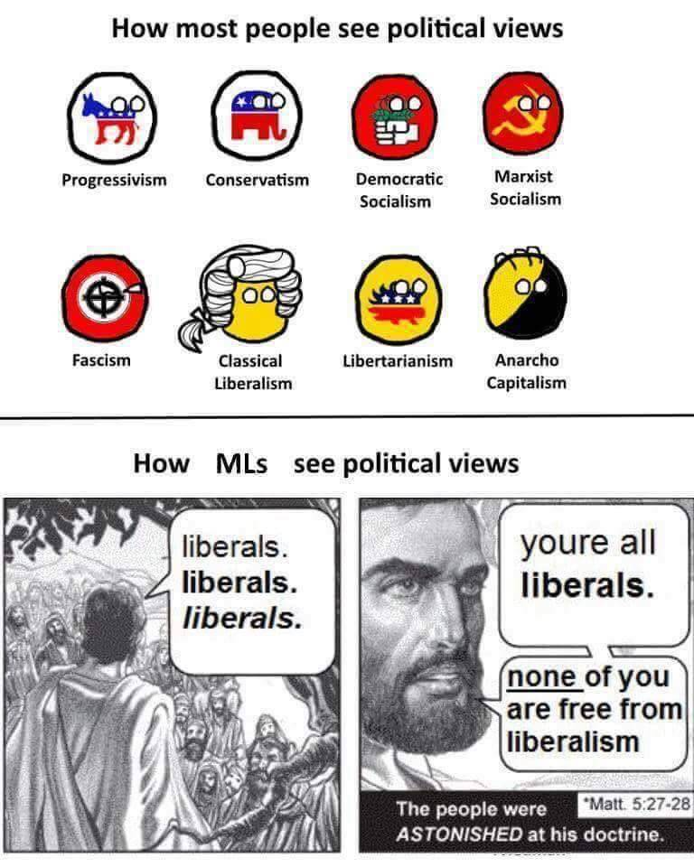
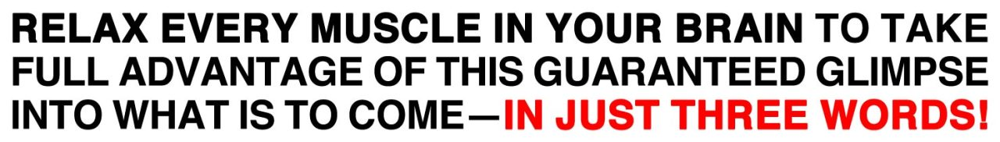

bophtelophti:
ciceronian:
thoodleoo:
what if every ancient text was translated in the style of dr. seuss
for example:
“I will not fight the Trojans!” Achilles then said.
“I will not fight them now or when you all are dead!
I won’t fight them at Troy. I won’t fight them at Greece.
I won’t fight them at war. I won’t fight them in peace.
I will not fight them while Agamemnon is king.
Do not try to bribe me- I won’t take your things.
I will not fight the Trojans, not here and not there.
I will not fight the Trojans- not anywhere.”
“You’re abusing our patience!” old Cicero said,
“And if there’s sense in the Senate they’ll soon have you dead!
Are you not alarmed by the people’s alarm?
Don’t you know that your plans will be doing us harm?
What is it you’re doing that I do not know?
Oh the times! Oh the morals! You really must go!
Since wise men must do what is best for the state,
we, the consuls, should kill you before it’s too late.”
Let me sing about arms, let me sing of the man,
Let me sing of Aeneas’s Rome-founding plan!
How he sailed off to Italy, fleeing from Troy,
Escaping the Greeks with his dad and his boy:
He was driven by fate, he was punished by Juno,
He suffered in war—and that’s just the part you know.
Oh my love, don’t you know that you’re just the bombshell-est?
See, your hair looks like goats, which we know are the swellest!
You’ve got teeth white as bunches of sheep that are shorn –
And they’re sheep to which TWO lambs, not NONE, have been born.
Scarlet lips! Lovely speech! Cheeks like pretty red fruit!
A neck like an armory tower, to boot!
It’s got thousands of shields on it, mighty and broad.
(Which I guess are a necklace? This seems kind of odd.)
Anyway – you’ve got breasts! Look! Breast One and Breast Two!
I’ll compare them to deer, like the best poets do!
fizzygingr:
fizzygingr:
I realized that “tilapia” rhymes with “stop ya” and now for some reason I feel compelled to write a hallelujah parody about fish.
Well I heard there was a secret sauce
That David made and it pleased the Boss
You want to try it, I ain’t gonna stop ya.
It goes like this: cilantro, lime,
A splash of cream, a lemon rind,
And pour it over freshly grilled tilapia.
An empirical question: do you get visibly different personality profiles in the Democratic Ruling-Class Political Machine as compared to the Republican Ruling-Class Political Machine?
It seems, a priori, like you should. The native culture of the ruling class is very, ah, Blue Tribe. Young politicos of both parties come out of elite colleges and elite law schools and prestigious public sector internships…but all these things are, as conventionally understood, factories for Democrats. Coming out of that context and deciding to be a high-profile agent of the Democratic Party seems like it says something very different about you, in terms of personal predilections and personal virtues, than coming out of that context and deciding to be a high-profile agent of the Republican Party.
I’d imagine that you get a lot more fanaticism, conventionality, and self-delusion amongst the Dems. (“I’m buffing my resume, and kicking competitors down the ladder, for the good of the nation!”) I’d imagine that you get a lot more naked cynicism and status-grubbing amongst the Repubs. (They can’t all be Ross Douthat fish-out-of-water types; presumably many of the rest are the sort who just want a fast route to power and prestige, and can see that the queues are a lot shorter in Republican Leadership Land?)
But I have no actual knowledge. And the common stereotypes, at least, suggest that these are in fact very similar groups of people.
Eh?
fierceawakening:
tchtchtchtchtch:
fierceawakening:
http://cheyennecheyenne.tumblr.com/post/151127246428/ive-been-reading-this-thread-on-reddit
I… wish I could agree, but I’m honestly not sure I can. Because yes, you can “criticize something” without saying “there oughta be a law.”
But what does criticizing mean? What ends is it designed to achieve? Very often, no one knows. And if they do know, they tend to parse to getting someone disgraced or making it difficult for someone to make money, which… well, a lot of people don’t have issues with those things, but I kinda do, because I don’t think people are one thing they did.
If there oughta be a law, then it’s clear what your end goal is, and you know whether you’re achieving it or not. You also know how far along you are, because even if your law has not been passed yet, you have things happen along the way like legislators sponsoring it. You know what challenges are occurring and whether they’re minor wording – everyone agrees this is a good idea but they don’t agree on how it should look – or whether you’re facing a serious uphill battle.
With “you can criticize a thing,” okay. You wrote a blog post. Now what do you want to happen? Are you looking for your post to go viral? Are you looking for a formal apology from a content creator? (Are there particular formulaic elements you require in the apology, such that if they are not included the apology is a “fauxpology?” Does the person you want the apology from know this?) Are you looking for a firing? Are you looking for an especially intelligent hatedom that impresses people with its incisiveness?
Etc. “Liberal feminism” gets lambasted all the time, but at least “liberal feminism” is clear about what it is looking for.
This kind of thing is actually the stuff I think looks reasonable at first and is actually a tumblrism (or better said a neo-Marxist impossible project regardless of platform), not the other way around.
Most criticism isn’t trying to make anything happen as a direct result, it’s just putting out opinions to inform and change the conversation.
When I, say, complain about sexist media (this isn’t something I do often but it does come up) I’m generally trying to (a) complain to someone about a thing that annoys me (b) give my friends information about whether they should watch the thing © explain to people why I find this sexist, and if I’m lucky, convince others.
The idea is that the culture gradually changes through people gradually changing their values and preferences. Maybe eventually this will lead to less sexist media, but even if not, meanwhile I like having people around me who agree with me on this stuff.
Also, media criticism can be a lens for talking about actual behaviors. Like if I say “this character’s behavior is sexist and hostile to consent, and I don’t like that he’s portrayed in such a positive light”, and someone disagrees, we can dissect the minutia of the character’s behavior in a way we couldn’t do with a real person without being super accusatory (and having access to a real person’s private moments). If I convince someone about what *behavior* is wrong, that has obvious benefits as they’re less likely to behave that way in the future.
“Like if I say “this character’s behavior is sexist and hostile to consent, and I don’t like that he’s portrayed in such a positive light”, and someone disagrees, we can dissect the minutia of the character’s behavior in a way we couldn’t do with a real person without being super accusatory”
In theory, yes, but in practice that often demonizes the person who disagrees with you or who is more okay with dubious consent than you.
Also, it doesn’t really make social change most of the time I don’t think. I mean I guess it can, but… it seems to me that what goes on is a lot of public shaming that only sometimes changes what writers other than the shamed choose to say.
It’s not that I don’t want people to say what they don’t like in media. It’s that public shaming is a nuke, and to me when people start calling their critiques “feminist analysis,” well… that raises a yellow caution flag, because the people who talk like that are the people who are more likely to have a Trumpy attitude toward their nukes.
“
In theory, yes, but in practice that often demonizes the person who
disagrees with you or who is more okay with [thing] than you.”
Siiiiiiiiiigh this is very true.
And this is why discourse norms are important! It’s actually really important for Person A to be able to signal “I disagree with Person B’s position here, strongly and morally, but am not attacking Person-B-as-a-speaker in any way.” If you can’t do that, then…bad things happen.
EITHER
(1) Person A will feel he has no way to express his position at all, or
(2) Person A will say “fuck it” and go after Person B directly with fire and sword.
Situation (1) usually devolves to Situation (2), since people with strongly-felt moral opinions are generally unwilling to sit on them forever in the name of Nice Discourse.
Excruciating politeness and interpersonal generosity are really useful for this. It’s kind of a pain to keep throwing off the explicit signals of WE ARE ALL BEING SUPER RESPECTFUL OF EACH OTHER YES WE ARE, especially when you want to be venting at your interlocutor, but…it pays dividends in terms of actually being able to have a conversation.
bambamramfan:
balioc:
fierceawakening:
http://cheyennecheyenne.tumblr.com/post/151127246428/ive-been-reading-this-thread-on-reddit
I… wish I could agree, but I’m honestly not sure I can. Because yes, you can “criticize something” without saying “there oughta be a law.”
But what does criticizing mean? What ends is it designed to achieve? Very often, no one knows. And if they do know, they tend to parse to getting someone disgraced or making it difficult for someone to make money, which… well, a lot of people don’t have issues with those things, but I kinda do, because I don’t think people are one thing they did.
If there oughta be a law, then it’s clear what your end goal is, and you know whether you’re achieving it or not. You also know how far along you are, because even if your law has not been passed yet, you have things happen along the way like legislators sponsoring it. You know what challenges are occurring and whether they’re minor wording – everyone agrees this is a good idea but they don’t agree on how it should look – or whether you’re facing a serious uphill battle.
With “you can criticize a thing,” okay. You wrote a blog post. Now what do you want to happen? Are you looking for your post to go viral? Are you looking for a formal apology from a content creator? (Are there particular formulaic elements you require in the apology, such that if they are not included the apology is a “fauxpology?” Does the person you want the apology from know this?) Are you looking for a firing? Are you looking for an especially intelligent hatedom that impresses people with its incisiveness?
Etc. “Liberal feminism” gets lambasted all the time, but at least “liberal feminism” is clear about what it is looking for.
This kind of thing is actually the stuff I think looks reasonable at first and is actually a tumblrism (or better said a neo-Marxist impossible project regardless of platform), not the other way around.
The “main point” is usually cultural influence, isn’t it? When you start talking, especially through a medium like tumblr, the hope is that other people will become infected with your preferred memetic viruses and start to think along lines that you find valuable. Hearts and minds. You know, the thing that authors in most contexts usually say that they want to do.
“Concrete” “practical” results (apologies, firings, policy changes) are very secondary.
Which doesn’t render the project frivolous. Cultural change drives pretty much everything else, at the root level. Once hearts and minds have been altered, everything else falls fast and easily. We’ve seen a whole lot of that in the last couple of decades.
(…which I guess all translates to things like “looking for your post to go viral” and “an especially intelligent hatedom that impresses people.” But both of those formulations seem unfair. Even more than politics, idea-building is the long slow boring of hard boards. The grunt work of writing essays and sharing thoughts is endless. It’s a good thing that so many of us seem to find it intrinsically rewarding.)
**********
To be clear: this is all a meta-point about the nature of conversation. Not an attempt to speak up for feminist media criticism specifically, which, well, at the very least it’s definitely not my project.
But it’s not like there’s no point to discourse contributions unless you can walk away with a trophy.
Eh I think you are descending into vagueness with this reply (Ra Ra Ra). I read @fierceawakening as saying “What does success with a post look like?” We can all say “we are trying to change the discourse” but what sort of measurable effects does that really mean? And once that goal is set, people can ask “is the thing that offended me really worth the reaction I am working to implement?” A law is at least a willingness to take a stand and say “this is the effect I want, and their offense is worthy of it.”
Who knows what you’re getting when you try to change hearts and minds. 99% of the time you’ll get nothing, but even when you’re successful… maybe you’ve worked up a mob and the offender’s house gets burned down. Was that what you wanted? What if some of your allies did want the mobfire, but you didn’t, but your posts were more viral than theirs… who takes responsibility for the mob?
“Who knows what you’re getting?” We all do, in the broad sense. We’ve seen with our own eyes what it means for the world to become different in response to ideological/cultural shifts amongst the population.
…which is not to say that every tumblr post is a calculated attempt to Move the Discourse by X%, or some such nonsense. We talk because we’re humans and we’re driven to talk, because our version of community-building and social grooming involves communication, because we’re trying to build personal reputations as thinkers, because the Muse is a Harsh Mistress, etc. etc., whatever. If you’re trying to break it down psychologically, it’s gonna be that kind of thing the vast majority of the time, and it’s a bit (ahem) anti-human to sneer because the communications involved aren’t built to produce Specific Concrete Outputs.
But even from the perspective of wanting Specific Concrete Outputs, in the long run, idea-dissemination matters more than anything [human].
If you really want a specific example to talk about, look at gay rights. There have been lots of concrete gay-rights triumphs along the way, and many of them have mattered a lot to people – firings, apologies, legislative acts, court decisions – but none of them has mattered a thousandth as much as creating a society where homosexuality is generally considered normal and acceptable. Without that, everything else is irrelevant or impossible; with it, everything else is trivial or unnecessary. And the concrete triumphs did in fact play their part in shifting Hearts and Minds, but at least as much (probably much more) was done by the endless stream of communications on the topic, media depictions and writings and personal conversations, on and on and on.
It’s really hard to trace a shift like that back to One Movie, let alone One Blog Post. It all dissolves into a sea of “cultural influence.” If you’re trying to be a revolutionary sage, that fact really sucks. For everyone else it doesn’t matter. When you contribute, you’re part of the grand historical process. You can’t trace the particular effects of your particular contribution: who cares?
(And…yes…if you’re contributing to a World Where More People Think Like You, that will entail contributing to a World Where More Angry Mobs Think Like You, and More Abusers Think Like You, and More Internet Jerks Think Like You, etc. Which is tragic. And if you’re personally responsible for setting off a mob or something, very tragic. But this seems like a necessary epiphenomenon of doing literally anything cultural.)
Call it vague if you want, but I strongly object. Cultural influence is as worthy an endeavor as anything. Making a thinker feel guilty for not having a Policy Outcome in mind is not only unkind but actively counterproductive.
fierceawakening:
http://cheyennecheyenne.tumblr.com/post/151127246428/ive-been-reading-this-thread-on-reddit
I… wish I could agree, but I’m honestly not sure I can. Because yes, you can “criticize something” without saying “there oughta be a law.”
But what does criticizing mean? What ends is it designed to achieve? Very often, no one knows. And if they do know, they tend to parse to getting someone disgraced or making it difficult for someone to make money, which… well, a lot of people don’t have issues with those things, but I kinda do, because I don’t think people are one thing they did.
If there oughta be a law, then it’s clear what your end goal is, and you know whether you’re achieving it or not. You also know how far along you are, because even if your law has not been passed yet, you have things happen along the way like legislators sponsoring it. You know what challenges are occurring and whether they’re minor wording – everyone agrees this is a good idea but they don’t agree on how it should look – or whether you’re facing a serious uphill battle.
With “you can criticize a thing,” okay. You wrote a blog post. Now what do you want to happen? Are you looking for your post to go viral? Are you looking for a formal apology from a content creator? (Are there particular formulaic elements you require in the apology, such that if they are not included the apology is a “fauxpology?” Does the person you want the apology from know this?) Are you looking for a firing? Are you looking for an especially intelligent hatedom that impresses people with its incisiveness?
Etc. “Liberal feminism” gets lambasted all the time, but at least “liberal feminism” is clear about what it is looking for.
This kind of thing is actually the stuff I think looks reasonable at first and is actually a tumblrism (or better said a neo-Marxist impossible project regardless of platform), not the other way around.
The “main point” is usually cultural influence, isn’t it? When you start talking, especially through a medium like tumblr, the hope is that other people will become infected with your preferred memetic viruses and start to think along lines that you find valuable. Hearts and minds. You know, the thing that authors in most contexts usually say that they want to do.
“Concrete” “practical” results (apologies, firings, policy changes) are very secondary.
Which doesn’t render the project frivolous. Cultural change drives pretty much everything else, at the root level. Once hearts and minds have been altered, everything else falls fast and easily. We’ve seen a whole lot of that in the last couple of decades.
(…which I guess all translates to things like “looking for your post to go viral” and “an especially intelligent hatedom that impresses people.” But both of those formulations seem unfair. Even more than politics, idea-building is the long slow boring of hard boards. The grunt work of writing essays and sharing thoughts is endless. It’s a good thing that so many of us seem to find it intrinsically rewarding.)
**********
To be clear: this is all a meta-point about the nature of conversation. Not an attempt to speak up for feminist media criticism specifically, which, well, at the very least it’s definitely not my project.
But it’s not like there’s no point to discourse contributions unless you can walk away with a trophy.
Are programmers congenitally stupid
bambamramfan:
balioc:
isaacsapphire:
Specifically, are programmers, on account of some intrinsic aspect of being programmers, inherently tending to be absolutely fucking morons when it comes to political philosophy?
Like, I am CONSTANTLY having this problem: I see a programmer who seems fairly smart and interesting, so I listen to their political philosophy stuff. After a while, I realize that the programmer is an idiot who appears to live in a different reality.
And there seems to be a pattern to this. My current theory is that becoming absorbed in a world of 1. No geographic boundaries and very very low geographic costs 2. A world where everything is no/low cost instantly clonable 3. A world where they can control absolutely everything if they are clever enough (just off of the top of the head) has warped their perceptions and made them fucking useless at political philosophy.
OK, serious question: have you found a sizeable, well-defined group of people who do not tend to be absolute fucking morons when it comes to political philosophy?
If you have: is it your group?
Programmers, particularly Programmer Culture programmers (who of course are not all of them), do kind of live in their own world. And, yeah, it influences both their political priorities and their methodological instincts. The same goes for Small-Town White Shopkeepers, and Theory-Immersed Humanities Students, and Bostonian Irish-American Gangsters, and Upwardly-Mobile Black Suburban Professionals, and and and and…
When you’re outside the bubble, whichever bubble it is, bubble thinking looks and sounds absurd.
Which it isn’t, always. Bubbles generate some damn good ideas. But most of the time, if you’re trying to take an outside view to any extent, you’ve got to account for “much of the world doesn’t actually match the patterns that are intuitive to the person trying to explain How Things Work.” And that’s true pretty much regardless of who the speaker is, particularly once you’re looking at Cultural Dogma rather than One Weird Guy’s Weird Ideas.
Taking in all the ideas from all the places, and then refining them so they’re not stupid or blinkered, is really hard work. Nonetheless I prefer it to the alternatives, which mostly involve staying inside bubbles.
If the evidence is “a disproportionately high number of successful terrorists are from engineering related fields” there is probably something more going on than “we each have our own bubbles.”
Yes. Specifically, it’s “we each have our own bubbles, and the engineering bubble matches well with terrorism-friendly ideology.”
Which is an interesting thing to know, if it’s true. (And in fact I suspect it is, for whatever that’s worth. Engineers and programmers are the type to Take Ideas Seriously, which means that if they start buying into a thing – like a very popular, locally-dominant ideology – they’re more likely to act on its principles as opposed to just using it for signaling value.)
But…so what? In a broader sense, anyway? If we want to play the game of what structural factors led to this particular brand of predictably biased thinking?, we can do that all the time, with everyone. It doesn’t even help us counter the bubble logic, let alone improve on it. It is the slightly-abstracted form of Bulverism.
[deep breath]
OK, I’m probably being a bit too reactive here. Doing cultural analysis on specific groups of people can be fun, and even insight-generating. No reason not to, in theory.
But this is the first step down the really short path that ends at paternalistic management of communities. “It’s not worth talking about your points; we’re going to talk about you, because we need to fix your problems, because you obviously don’t have the intellectual wherewithal to contribute to that process yourself.”
I am a super elitist. I am not opposed to the paternalistic management of communities. See: everything that gets said about the Trumpenproletariat.
If people are deciding that the communities in need of paternalistic management include “programmers,” I will start to get worried.
Are programmers congenitally stupid
isaacsapphire:
Specifically, are programmers, on account of some intrinsic aspect of being programmers, inherently tending to be absolutely fucking morons when it comes to political philosophy?
Like, I am CONSTANTLY having this problem: I see a programmer who seems fairly smart and interesting, so I listen to their political philosophy stuff. After a while, I realize that the programmer is an idiot who appears to live in a different reality.
And there seems to be a pattern to this. My current theory is that becoming absorbed in a world of 1. No geographic boundaries and very very low geographic costs 2. A world where everything is no/low cost instantly clonable 3. A world where they can control absolutely everything if they are clever enough (just off of the top of the head) has warped their perceptions and made them fucking useless at political philosophy.
OK, serious question: have you found a sizeable, well-defined group of people who do not tend to be absolute fucking morons when it comes to political philosophy?
If you have: is it your group?
Programmers, particularly Programmer Culture programmers (who of course are not all of them), do kind of live in their own world. And, yeah, it influences both their political priorities and their methodological instincts. The same goes for Small-Town White Shopkeepers, and Theory-Immersed Humanities Students, and Bostonian Irish-American Gangsters, and Upwardly-Mobile Black Suburban Professionals, and and and and…
When you’re outside the bubble, whichever bubble it is, bubble thinking looks and sounds absurd.
Which it isn’t, always. Bubbles generate some damn good ideas. But most of the time, if you’re trying to take an outside view to any extent, you’ve got to account for “much of the world doesn’t actually match the patterns that are intuitive to the person trying to explain How Things Work.” And that’s true pretty much regardless of who the speaker is, particularly once you’re looking at Cultural Dogma rather than One Weird Guy’s Weird Ideas.
Taking in all the ideas from all the places, and then refining them so they’re not stupid or blinkered, is really hard work. Nonetheless I prefer it to the alternatives, which mostly involve staying inside bubbles.

balioc:
wirehead-wannabe:
thathopeyetlives:
isaacsapphire:
Here’s a nice picture my Communist friend posted on Facebook. In context, ML means Marxist-Leninist.
Honestly, I think that you can probably 4panel this.
Top Left: You’re all liberals, liberals, liberals, none of you are free from liberalism.
Top Right: Demotists…
Bottom Left: Fascists
Bottom Right: Statists
Classical liberals are fascists?
I think the idea is that, to a classical liberal, everyone outside the Comfort Zone looks like some minutely-different species of fascist. That “fascist” is liberal-speak for “Bad Guy.” (Or, more charitably, that to liberal thinking, fascism is the pervasive spiritual virus that makes human society Not A Paradise.)
…aaaaaaand I see that this has already been covered. Mea culpa.
This is why you look at the whole thread, I guess.
wirehead-wannabe:
thathopeyetlives:
isaacsapphire:
Here’s a nice picture my Communist friend posted on Facebook. In context, ML means Marxist-Leninist.
Honestly, I think that you can probably 4panel this.
Top Left: You’re all liberals, liberals, liberals, none of you are free from liberalism.
Top Right: Demotists…
Bottom Left: Fascists
Bottom Right: Statists
Classical liberals are fascists?
I think the idea is that, to a classical liberal, everyone outside the Comfort Zone looks like some minutely-different species of fascist. That “fascist” is liberal-speak for “Bad Guy.” (Or, more charitably, that to liberal thinking, fascism is the pervasive spiritual virus that makes human society Not A Paradise.)
brazenautomaton:
balioc:
brazenautomaton:
latest reason for shame-drenched suicidally-ideating drive home of shame: did escape room too well, leaving the other group of people feeling like they didn’t do anything
I tried to vocalize all my thoughts and why I thought things and where I thought things would go! So did the two people with me! We got stuck on several puzzles! But the manager had to pull them aside at the end and ask if they were okay, I heard it when we were walking out. Then I went back in after they left, and he said “No, you guys didn’t do anything wrong, you were fine, it was just that they were here for a birthday party, and they felt like you guys were so on top of things, they didn’t get to do anything.” which you may recognize as a description of us NOT being fine and, in fact, making other people have a bad time!
…your Escape the Room parlor combined multiple parties that didn’t show up together? I really, really don’t think this one is on you. This one is on the event-organizer putting things together in a shitty way.
(Seriously, there is no way to ensure a “correct distribution of fun” when the activity at hand is puzzle-solving. The variables are just too…variable. If all the people involved are friends, it’s fine, because you’re just going to go Full Communist with the experience. But it’s obviously going to fail with strangers, unless by some miracle they’re super-well-matched in terms of puzzling skill.)
Both of the places in town that do escape rooms do it this way as a matter of course and said explicitly “If you don’t buy out all of the tickets for a given time slot, it’s possible that you will be in a group with other people.”
Leading me to believe it is standard practice.
Urgh. If it was explicitly announced in advance that this might happen, then OK, I guess, but…urgh. Strikes me as Very Bad Practice.
(The ones that I’ve done, all in NY, have very definitely not done this thing.)
brazenautomaton:
latest reason for shame-drenched suicidally-ideating drive home of shame: did escape room too well, leaving the other group of people feeling like they didn’t do anything
I tried to vocalize all my thoughts and why I thought things and where I thought things would go! So did the two people with me! We got stuck on several puzzles! But the manager had to pull them aside at the end and ask if they were okay, I heard it when we were walking out. Then I went back in after they left, and he said “No, you guys didn’t do anything wrong, you were fine, it was just that they were here for a birthday party, and they felt like you guys were so on top of things, they didn’t get to do anything.” which you may recognize as a description of us NOT being fine and, in fact, making other people have a bad time!
…your Escape the Room parlor combined multiple parties that didn’t show up together? I really, really don’t think this one is on you. This one is on the event-organizer putting things together in a shitty way.
(Seriously, there is no way to ensure a “correct distribution of fun” when the activity at hand is puzzle-solving. The variables are just too…variable. If all the people involved are friends, it’s fine, because you’re just going to go Full Communist with the experience. But it’s obviously going to fail with strangers, unless by some miracle they’re super-well-matched in terms of puzzling skill.)
Regarding the first season of True Detective:
Am I the only who thought that the writers set up a really interesting scenario in the last couple of episodes, before they decided to ignore it completely for some reason?
I read a lot of critics complaining that the Big Bad, the cult leader, turned out to be an just an inbred backwoods loon out of Deliverance. OK, fair enough, that’s a pretty hackneyed horror scenario by this juncture. But it had already been established that the cult included a lot of rich and important people, a lot of power-players in Louisiana politics. Which means that all of those guys were actively participating in a religious movement run by an inbred backwoods loon.
I think that setup is really cool. I want to know what those rich and important cultists were thinking as they went to their cult meetings and listened to the deranged ranting of their fearless leader. I want to know something, anything, about the Bizarro World class-and-culture dynamics that must underlie such an organization.
It sure would have beaten the season ending we actually got.
bambamramfan:
bambamramfan:
kontextmaschine:
deusvulture:
anosognosic:
more-whales:
Welcome to my new game show! I name an abstract quality or category, and you name objects that instantiate that abstraction. Everyone is a judge, whether they know it or not.
For the first round, we have:
Giving The Sense Through Filmic Storytelling That The World Is Bigger Than The Protagonists And Their Narrative
To get us started, I’ll tentatively name Princess Mononoke.
I nominate A Serious Man
Dazed and Confused
The Fifth Element
I mean it the narrative was about the protagonists saving the world, but only thing to give me a sense of what it must’ve been to watch Star Wars before it was canonized
The Neverending Story
Oh, and all three Neil Bompkamp movies. (District 9, Elysium, and to a lesser degree Chappie.)
Which themselves remind me that their thematic ancestor, Alien, had this in spades.
Azumanga Daioh
…I mean, it’s a very non-central example of the phenomenon under consideration, but even so. Perhaps especially so.
ITT is the most confusing acronym
bambamramfan:
.@ozymandias271 is hosting an “Intellectual Turing Test” competition over at their wordpress, and the comments are really interesting. https://thingofthings.wordpress.com/2016/10/12/itt-social-justice-2/
What I think all this really highlights is how much ideology is not located within the individual. Zizek is fond of pointing out how ideology subsists when people don’t fully believe in it:
once upon a time we pretended to believe, while, in our intimacy, we were skeptics or even engaged in obscene mocking of our public beliefs.
Often one believes even if only indirectly through seeing how others believe, in this case ‘all that matters is that’ one believes ‘it to be true that most of the people around them believe’. And ‘for a particular ideology to survive, it is not essential that people actively support or believe in it’, Zizek writes.
And what are the comments saying? This person could not be a real SJ-er because they don’t express doubt or enough sympathy to try to understand the other side. Which is to say, you only sound like a person from SJ ideology if you disavow at least some of SJ ideology.
Ideology is then, a belief system that everyone involved knows about but none/few “take seriously all the way.” Which renders the entire question of whether the the mystery answerer “means it” or not irrelevant. They are able to be an agent continuing the meme, even if they are some secret double agent who was fighting against the ideology all along.
This is…not a fair analysis of the phenomenon under consideration, I think.
I mean, yes, it’s true that “ideology can exist [totally] outside the individual.” Cf. the worst eras of Communist Chinese political-insider-dom, when Everyone was parroting ridiculous party-line ideas because Everyone knew that Everyone would purge anyone who didn’t do that thing, even though small-e everyone was talking (or thinking) secretly about how ridiculous those party-line ideas were.
But the tenor of the ITT commentary on Ozy’s blog is, well, not that and not even particularly tangent to that.
“SJ” and “Anti-SJ” are both ideologies with enormous internal diversity. In particular: both ideologies run a spectrum from “high” versions, which are filled with sensitive and careful thought that is meant to withstand harsh scrutiny from intelligent outsiders, to “low” versions that are basically just mindless tribal war-chanting that takes place within echo chambers.
And, of course, except at the very very highest levels of discourse, members of each team engage primarily with the lowest and most stereotype-able versions of the opposing creed.
Playing the ITT game well, especially when run in a center of high discourse like Ozy’s blog, centers on being able to replicate the highest (strongest) version of the opposing argument. It’s not that hard for a good rhetorician to lay out the really good version of his own beliefs, the version that doesn’t involve any shibboleths or slurs at all – even if there are plenty of people on his side who would use those shibboleths and slurs, even if he’d do it himself in a less-diplomacy-focused context – but it’s somewhat harder to do the same thing for your opponent, since you spend less time thinking about the opposing High Discourse and more time thinking about the opposing slime. That’s the theory, anyway.
So when someone’s allegedly-pro-SJ submission uses a nasty catchphrase like “fragile male egos,” it scans as a replication error. Not because no SJ fan would ever use a phrase like that, but because in this context we expect genuine SJ fans to present themselves differently, in a more high-discourse way, which is hard to replicate if you engage with SJ ideology as Enemy Slime Ideas.
Less interesting than what you’re going for, but truer to the fabric of reality.

fierceawakening:
multiheaded1793:
anaisnein:
runecestershire:
eglantinebr:
bubonickitten:
intrases:
wall void cube…. k
jumbo regret army
…so basically a collective name for my 47 anxiety disorders. i like it.
chicken, dilatory, void
undeath, coincidental, bookspace
(ok, maybe that last one is supposed to be two words, but they’re right smack next to each other and it’s a thing)
perpetual mystical spice
i’m DOWN
night judgement guy
…Batman is going to fuck me up? welp.
blood mammoth symbols
UNBREAKABLE RESURRECTION PRESIDENT
…this bodes well.
Reblog with the nonbasic land you identify most with. I’m Rogue’s Passage.
brazenautomaton:
affinityforanime:
fresh-prince-of-beleren:
tlatotem:
tibalt-the-fiend-blooded:
wort-boggart-auntie:
genderlich:
eight-times-nine:
hydrageneticist:
thatguywithtentacles:
odric-master-swagtician:
brozilek:
commandtower-solring-go:
Joke: Scrubland
For realz: Evolving Wilds
Shambling Vent
no, for real. i dunno, it’s somethin about the posture
Nykthos
Faerie Conclave
City of Ass
Vesuva
Windbrisk Heights
Goblin Burrows
Geier Reach Sanatarium
Mishra’s. Factory.
Gaea’s Cradle, yo!
Skycloud Expanse
sorrow’s path
in like every sense
Tomb of Urami.
brazenautomaton:
signalling -> counter-signalling -> counter-counter-signalling
pepper -> pepperoni -> pepperoncini
romancer –> necromancer –> kissonthenecromancer
I feel like what you're saying takes away the agency of victims and the necessity of believing them and their testimony being part of getting them justice. My word should have been enough to put the man who sexually assaulted me in jail. It wasn't. And you're saying that's okay. It's not.
balioc:
funereal-disease:
It’s really, deeply shitty that a lot of people end up escaping justice because of modern evidentiary standards. There’s a lot we can do to improve that - ending the rape kit backlog, developing better and more empathetic resources for survivors, etc. But there are two things on which I will continue to stand firm:
- legal innocence until proven guilt, and
- proven guilt beyond a reasonable doubt
Due to the nature of domestic abuse generally, it’s often really really difficult to establish guilt beyond said reasonable doubt. I do not begrudge any victim one iota of their pain and outrage over that. But erring on the side of innocence is really, really important. There’s a reason multiple societies through history have relied on Blackstone’s formulation. Establishing a precedent of imprisonment based on one person’s word may be satisfying in the moment, and it may occasionally have a just outcome (as in the case of your abuser), but it is a scary precedent to set in a society. Once invoked, it will almost always favor the powerful.
Worse yet: it favors the unscrupulous.
If you tell everyone “you can send someone to jail with an accusation of assault, no questions asked, we’ll trust you” – who do you think is going to take you up on that, most of the time? How long before the victims get completely drowned out by unscrupulous folks trying to dispose of their personal enemies?
Any social system you set up – of any kind – is going to be gamed by hordes of people trying to abuse it in the worst way. It has to be robust against that, and if it isn’t, it will quickly devolve into a tool of chaos and destruction.
I should clarify –
It’s not just unscrupulosity and active malice. It’s also just motivated reasoning, subjective psychology, the normal amplification of one’s own pain and normal-class empathy failures. When you’re sad and hurt and angry, it’s very easy to jump to “the person who made me feel this way did something Very Very Wrong”…without a lick of intentional dishonesty…even if it’s not at all true, even if the actions of the “abuser” are totally proper when seen from an outside perspective.
[This point was raised by an offline friend.]
brazenautomaton:
dndnrsn:
fullyarticulatedgoldskeleton:
I’ve been thinking a lot about why people tend to automatically side with abusers when faced with their victims, even when they don’t know anything about the abuser, just the fact that they are one
There’s an abuse culture but it has to come from somewhere
I think people are reluctant to believe in evil, reluctant to confront things that may make them anxious or feel bad, and the easiest thing in the world to do is to shut down the person who’s “making” them feel that way because that person has already been weakened and discredited by their abuser to begin with.
A lot of knee-jerk human reactions tend to be like this, where the point isn’t necessarily “I want to side with abusers” but other desires and anxieties that play right along with contributing to someone’s victimization
Would this be an application of the just world fallacy? We would prefer not to think that someone can be manipulated in such a fashion, because it lets us believe we could not be manipulated in the same fashion?
Why does there have to be an abuse culture coming from somewhere? It’s not coming from anywhere. Nobody had to make it this way. People find it inherently emotionally rewarding to side with abusers against their victims, and this is true, and it was always true, and it will always be true, in every culture that has ever existed and will ever exist. If being an abuser did not give you power and allow you to commit more abuse, abuse wouldn’t be a problem that anyone had to think about.
[deep breath]
If there’s one single solitary thing that humans are good at doing –
– if there’s one thing for which our brains have evolved to prepare us, since the days when we were Homo erectus –
– that thing is “managing conflicts and tensions within small tightly-knit social groups.”
Like, seriously, people have really amazingly good instincts for handling social drama. If you look at the right kinds of traditionally-structured communities, you can see it in action, it’s like fucking magic. And even in “normal society,” amongst close groups of friends and suchlike, similar principles hold sway.
(Some restrictions apply. There are individuals who are not neurotypical and who have abnormally-formed social-management modules in their minds. Also, communities start to work very differently when, e.g., it’s easy for people to leave…or when it’s plausible to call in social artillery support from outside the sphere of a Dunbar’s-number-sized society…which means that most of the social drama we actually see these days involves people flailing around with misguided instincts. Etc. etc. Even so.)
The mechanisms by which this drama-management gets handled tend to involve lots of quiet talks, lots of shuffling people away from places/situations where they’re likely to cause problems, lots of soft pressure to keep things from spiraling out of control. These mechanisms are often not fair. They’re certainly not principle-driven. They on focus avoiding and containing conflict by the most expedient means possible, and that’s it, damn all other considerations.
In some ways, this is pretty OK, at least in the abstract. “We’re going to make sure that the issues between Alice and Bob don’t expand to swamp the lives of Carol and Dwayne and Eve; we’re going to help keep things behind closed doors so that the damage to others gets minimized.”
In some ways it’s just awful. “Alice is a powerful and aggressive person who can make life miserable for lots of people if she’s upset, and Bob is basically a nonentity with no power to cause trouble, so we’re going to appease Alice regardless of the merits of the situation.”
ANYWAY
By the social logic of the tribe, the conflict-minimization logic, the “correct” solution to an abusive situation probably won’t be even remotely acceptable by modern moral standards. (Classical liberal standards, social justice standards, whatever.) In the worst cases, the logic devolves to “the victim’s just got to suck it up and deal, the abuse is all happening in private and from a community perspective it therefore doesn’t exist, but any attempt to interfere with it would be messy and conflict-heavy.” Sometimes you can do better than that. Sometimes you can quietly get the victim out from under the abuser, and quietly create distance and barriers, and quietly let the whole thing fall into the memory hole. But however you slice it, it’s going to involve minimizing the conflict, because that’s the whole point. Labeling someone a Bad Wrong Norm-Violator, and casting him out / making him undergo severe punishment, is a huge and costly step from a community-health perspective – it creates divisions and ill-will, it sucks up lots of attention and energy, etc. – and so that kind of thing gets reserved for people who are genuinely posing a danger to the health of the whole tribe. Which abusers, generally, are not. As the common wisdom has it, they are dangerous only to their victims, and often pretty damn charming and helpful to everyone else.
The tribal logic isn’t dispositive these days. A abuser’s victim, once he starts standing up for himself as such, isn’t going to accede to whatever conflict-minimizing thing the tribe would want to do; he’s going to yell and scream about how he’s been mistreated and about the restitution / retribution demanded by justice. Often he’ll get his way, because pretty much everyone buys into those modern moral standards, including a number of Big Powerful Social Institutions that he can call for support. But whether he wins or loses, along the way there will be a big huge honking fight, with divisions and ill-will and lots of lost attention and energy, just the thing that the tribal logic was trying to avoid.
And people will notice, and resent that. They’ll resent it even if they don’t fully understand why. They’ll have a sense that everyone is angry and everything hurts, and that the fabric of the community is being damaged, and that it wasn’t supposed to be that way. Instinctively, they’ll expect the abuse to have been quietly managed and swept under the rug, and when things are messier than that they’re going to get mad at the person who seems to be making it messier. That person, of course, is the victim.
fierceawakening:
I really dislike the posts that go around that basically say it’s wrong to ever exclude people from a group. I think that runs a very huge risk of overshooting.
And I also think it’s kind of disingenuous. There are plenty of groups we want to have firm borders, for SJ style reasons. No one wants white boys crashing into WOC spaces, to use an obvious example.
So the idea that we all have to get past “being gatekeepers,” in some hugely sweeping general way, is just dumb to me.
Yes, some communities should be open and amorphous.
But no, not all of them.
A+, Would Reblog Again.
I will add: this means that some groups out there will exclude you, and the people you like best. And you just have to learn to be OK with that.
(…you can always argue that certain groups shouldn’t have gatekeeping, or shouldn’t have certain kinds of gatekeeping. Especially, y’know, groups that are centrally located in the public commons, groups that play key roles in social advancement, etc. But unless you’re prepared to let every one of your political enemies into your dinner parties, you’re going to have to give up somewhere…)
I feel like what you're saying takes away the agency of victims and the necessity of believing them and their testimony being part of getting them justice. My word should have been enough to put the man who sexually assaulted me in jail. It wasn't. And you're saying that's okay. It's not.
funereal-disease:
It’s really, deeply shitty that a lot of people end up escaping justice because of modern evidentiary standards. There’s a lot we can do to improve that - ending the rape kit backlog, developing better and more empathetic resources for survivors, etc. But there are two things on which I will continue to stand firm:
- legal innocence until proven guilt, and
- proven guilt beyond a reasonable doubt
Due to the nature of domestic abuse generally, it’s often really really difficult to establish guilt beyond said reasonable doubt. I do not begrudge any victim one iota of their pain and outrage over that. But erring on the side of innocence is really, really important. There’s a reason multiple societies through history have relied on Blackstone’s formulation. Establishing a precedent of imprisonment based on one person’s word may be satisfying in the moment, and it may occasionally have a just outcome (as in the case of your abuser), but it is a scary precedent to set in a society. Once invoked, it will almost always favor the powerful.
Worse yet: it favors the unscrupulous.
If you tell everyone “you can send someone to jail with an accusation of assault, no questions asked, we’ll trust you” – who do you think is going to take you up on that, most of the time? How long before the victims get completely drowned out by unscrupulous folks trying to dispose of their personal enemies?
Any social system you set up – of any kind – is going to be gamed by hordes of people trying to abuse it in the worst way. It has to be robust against that, and if it isn’t, it will quickly devolve into a tool of chaos and destruction.
A word to the good folk who work as worldbuilders and flavor designers for fantasy stories / games / etc. –
“Nature” does not mean “plants.”
There is no particular reason for forests to be considered any more “natural,” or any more inherently aligned with the primal atavistic world-spirit, or whatever, than mountains and oceans etc.
Thank you for your time.
Same asker. I phrased that badly. I don't agree with any of those propositions, but I do believe that many, if not most, prison abolitionists either do, or simply do not care. I have loved ones who work in prisons (because they are very poor; I cannot think of anyone who would choose this line of work if given another option). I have never seen a prison abolitionist suggest that their lives have any worth, or at least any worth that would not be outweighed by the goal of abolishing prisons.
theunitofcaring:
Same again, please note that’s not a defense of prisons, they are very awful. But everything I see about them highlights how abusive and inhuman the staff supposedly are, and I cannot think of what they are suggesting be done with such “abusive, inhuman” people other than exterminate them.
Is it helpful to think of prison abolitionists as people who believe that, categorically, no matter what someone has done, they do not deserve to be locked up and they do not deserve to suffer and they do not deserve to die?
I don’t have any particular reason to think that the average prison staff person is a bad person outside of being in an environment that harms people, and even if the average one were they wouldn’t all be, and even if all of them were, I would like to eventually not need prison because I would like for absolutely no one ever to be locked up or murdered or harmed, because no one deserves that.
Prison abolitionism often comes from the stance that no one is bad enough to deserve prison (and that, in fact, ‘bad enough to deserve’ is a category error.)
It’s a little tougher than that, I think. Prison work (like police work etc.) tends to attract, disproportionately, the sort of people who fit most poorly into idealistic culture/social schemes: people who really like having and wielding power over others, aggressive people, etc.
Idealistic cultural/social reformers often hate people like that, and rarely have any idea what to do with them Come The Revolution. (As far as I can tell, the general hope is that they’ll just disappear somehow. This seems unlikely.)
None of which is to say that the anon’s loved ones are anything like that. But, yeah, there’s hostility towards prison staff in the abstract, and that’s not totally just because of attribution error.
It’s not actually hard to write a game that will be fun for a cast of brilliant roleplayers. Brilliant roleplayers don’t need you to be awesome. They understand how to make their own fun – from scratch, if necessary. That’s what makes them brilliant.
The first degree of mastery is this: write a game that’s fun even for dullards and terrified newbies.
The second degree of mastery is this: write a game that makes it easy for the dullards and the terrified newbies to generate fun for others.
bambamramfan:
balioc:
In re Trump: I’m calling it now. Stick a fork in him, he’s done. Hillary wins in a moderate-to-major landslide. The Trumpenproletariat collapses in on itself. None of the normal campaign brouhaha, or the oh-so-disturbingly-close polling, will matter. Prediction’s down on the mat, 85%+ confidence.
[…barring some kind of huge late-October surprise, that is. But it would have to be very surprising.]
It’s not because of the unpleasantly rapey comments, of course. Not directly. Is anyone seriously surprised that The Donald has that kind of attitude towards his interactions with women? Does anyone seriously believe that there are potential Trump supporters who (a) are inclined to be bothered by that kind of thing, but (b) haven’t yet firmly decided to swallow their personal revulsion?
It’s because he apologized.
I mean, technically this isn’t the first time, he’s made statements labeled “apologies” before. But this is the first time it’s sounded remotely…contrite, or even fake-contrite. For all that the Times isn’t satisfied with his level of abject sincerity (surprise!), he’s actually using the language of “I did a genuinely bad thing and I regret it.” He’s acting like someone who thinks he can’t get away with doing what he got caught doing.
And, as far as I can tell, this kills his only selling point. He’s supposed to be the Hammer of SJWs, the invincible culture-war hero who cannot be bowed by the self-righteous left, the Man Who Never Apologizes. He pisses off the hated liberal elites, he tweaks their noses, he laughs as they fume and scold and go apeshit in their thinkpieces. That’s it. That’s what he’s got. I don’t think there are substantial numbers of people who seriously expect any kind of desired policy change to come from a Trump administration, even with regard to much-ballyhooed issues like immigration; the animating spirit of his movement is annoyance at domestic culture foes.
Now he’s just another weakling cuckservative. We’re finished here.
An incisive point fundamentally, but it’s possible people might overestimate the impact of this. The systemic incentives to bounce back are very strong (as anyone reading daveweigel’s reporting can see evidence of.)
If this came out in July, I might bet against you.
However, tonight is a debate, which will almost certainly provide another week of life for this explosion. And we’re less than a month from the election.
France’s LePen family provides a decent analogy for what happens to “blowhard populist and the political movement he coalesced”. Answer? His more competent daughter takes it over from him.
…it’s an interesting question, I guess. Yeah, haha, I can imagine Ivanka (or someone like her) pushing the right-populist build-the wall-and-bring-back-the-jobs “policy” line more competently than her dad ever did. And she’s a hot girl, so that’s some points right there with the relevant crowd.
But, like…can she channel the rage? Can she make you feel like she’s really sticking it to the goddamn SJWs who look down on you? The Trumpenproletariat, I think, cares way more about that than its far-right European counterparts do.
It’s not a gender thing; Sarah Palin did it pretty well. But I have some sense that it’s very hard to juggle that with the sort of calm, respectable, professional competence that the Trump campaign is missing so much right now. A lot of “competence” boils down to “knowing how not to shoot yourself in the foot pissing off the elites,” and, well…
Maybe what you need is an absolutely valueless, cynical, duplicitous creature like Ann Coulter. Someone who can put on the Trump Face, and take it off again, without missing a beat. We’ve already seen this year that you’d never have to acknowledge the contradiction.
In re Trump: I’m calling it now. Stick a fork in him, he’s done. Hillary wins in a moderate-to-major landslide. The Trumpenproletariat collapses in on itself. None of the normal campaign brouhaha, or the oh-so-disturbingly-close polling, will matter. Prediction’s down on the mat, 85%+ confidence.
[…barring some kind of huge late-October surprise, that is. But it would have to be very surprising.]
It’s not because of the unpleasantly rapey comments, of course. Not directly. Is anyone seriously surprised that The Donald has that kind of attitude towards his interactions with women? Does anyone seriously believe that there are potential Trump supporters who (a) are inclined to be bothered by that kind of thing, but (b) haven’t yet firmly decided to swallow their personal revulsion?
It’s because he apologized.
I mean, technically this isn’t the first time, he’s made statements labeled “apologies” before. But this is the first time it’s sounded remotely…contrite, or even fake-contrite. For all that the Times isn’t satisfied with his level of abject sincerity (surprise!), he’s actually using the language of “I did a genuinely bad thing and I regret it.” He’s acting like someone who thinks he can’t get away with doing what he got caught doing.
And, as far as I can tell, this kills his only selling point. He’s supposed to be the Hammer of SJWs, the invincible culture-war hero who cannot be bowed by the self-righteous left, the Man Who Never Apologizes. He pisses off the hated liberal elites, he tweaks their noses, he laughs as they fume and scold and go apeshit in their thinkpieces. That’s it. That’s what he’s got. I don’t think there are substantial numbers of people who seriously expect any kind of desired policy change to come from a Trump administration, even with regard to much-ballyhooed issues like immigration; the animating spirit of his movement is annoyance at domestic culture foes.
Now he’s just another weakling cuckservative. We’re finished here.
Congratulations! You have gone an an epic quest, pitted yourself against the Dark Lord, and saved the world! Now, the correct choice is to:
{a} take up the mantle of High King and rule in glory and splendor
{b} return to your rustic provincial existence, sadder but deeper and wiser, and devote yourself to ordinary life and ordinary love
{c} leave reality behind, for you are so weary of it, and travel into the foggy numinous West
{d} none of the above
[epistemic status: no idea whether this is actually true or not, but it’s an idea that deserves a more thorough exploration than a Tumblr shitpost can provide, and I hope I’ll get around to that at some point]
Posited: From a political/ethical perspective, the defining technology of the Present Age is “infinite high-quality entertainment.” Television, video games, certain sectors of the Internet (YouTube etc.).
Rationale: Infinite high-quality entertainment means that virtually every life is worth living, and that virtually everyone has a lot to lose. No matter how poor/despised/downtrodden/oppressed you are, no matter how shitty your situation is in terms of health or education or work or sex or friendship – if you live in the First World, at least – your worst-case scenario involves sitting in a room somewhere and having the world’s greatest storytellers and troubadours divert and delight you, nonstop. Which is, by the standards of human history, pretty darn good.
Ethical spin: Pretty much the obvious, at least if you’re a hedonic or semi-hedonic consequentialist. IHQE may represent a floor for human welfare, when it’s available.
Political spin: Certain kinds of political change depend on there being certain people (read: “low-status unattached young men”) who are so aggressively unhappy that they’re willing to throw their lives away, in large numbers, to show how pissed-off they are. IHQE, when it’s available, puts a damper on that. It’s one thing to fight and die for the Revolution when the alternative involves endless days filled with boredom and humiliation and loneliness and nothing else. But, nowadays, those endless days can be filled with WoW and Minecraft! No matter how much of a loser you are, no matter how much the Man is keeping you down, life can be entertaining for the low low cost of a good broadband connection! So maybe we’re just never again going to get a critical mass of people who are self-destructively angry enough to overthrow the System.
bambamramfan:
balioc:
https://newrepublic.com/article/137371/one-message-voters-send-election
I don’t entirely endorse Beutler’s reasoning, I don’t even mostly endorse it, but the central message is an important one. Political actions, including voting, should be purpose-driven. We’re talking about monkeying around with the government here; don’t do it for catharsis or emotional self-indulgence, do it because you want to achieve an outcome. And if one of the outcomes you want to achieve is “send a message,” that’s fine, but then you have to be a Good Clear-Eyed Sage and think about what message you’re actually going to send.
Everyone is frustrated. Everyone hates the system. Everyone wants to say “these choices suck, give us better ones, give us someone who will actually make a positive difference.” This is not some kind of secret, hidden, fringey opinion that the Self-Obsessed Elites won’t know about until you shout it in their ear. They know it already. I promise. We have the choices we have because they are the end products of a hideous toxic network of swirling coalitions and ideologies, not because some naively moronic planner thought they were good.
And, more to the point…regardless of whether Trump or Clinton walks away with the Big Prize…if 10% or 15% or 20% of the voters Register Their Protests by voting for Johnson or Stein, what do you think the system will learn from that?
Nothing, that’s what. We already went through this back in 1992 with Perot, and then again in 2000 with Nader. Didn’t shake the two-party system one bit, either time. Which is not, y’know, surprising. The two parties were not presented with any kind of existential threat; they were presented with the knowledge that certain sectors of the electorate could be disaffected and alienated. In the general sense, they already knew all that. The only take-away lesson was “it might be better to focus less on winning those sectors and go for more-reliable ones instead.”
If you really don’t accept The System, if you really think we need to Throw Off Our Shackles, buy some guns and start a revolution. If you’re not willing to do that – or if you don’t think you can find enough allies to make it anything other than a useless suicide mission – then it’s time to own up to the fact that you’re as much invested in The System as everyone else.
If you really want to Change Things From Within (which is 10000% saner), do things that will actually change relevant incentives for the political big dogs. Y’know, like the Bernie crowd did.
Your protest vote is not even successfully going to protest anything. No one will hear the thing you’re saying.
Your following logic is valid, but “
Political actions, including voting, should be purpose-driven.” is not remotely true for how people actually do act. People do not vote based on a calculation of the greatest good - they vote to express an emotion (often “fear” or “annoyance” or “spite”) or to solidify their identity. Every political campaign accepts this, so their ads or GOTV are based around these sort of emotional touchstones.
A US political system that requires the overwhelming majority of people being rational consequentialist actors, instead of reality… well is what is at fault here, and not the individual moral failings of Johnson/Stein voters.
Edit: “sending a message” is 95% of the time about your own emotional needs, and only rarely about the practical benefits of that message.
True, undeniably, on a macro level.
On a micro level…we must imagine that our interlocutors and readers are reasonable people who respond to argument, at least potentially, else what’s all this argument for?
(One obvious answer is, er, “we make pronouncements online to express emotion or solidify our identity.” Which is also undeniably true on a macro level. But even so.)
The things other people do for love.
brazenautomaton:
typing this while a cat is laying on my upper chest and against my face
no positive feeling from this whatsoever
can’t stand being alive and wish I could stop
Argh, argh, argh, I hate the memetic stew that spawns this kind of misery. I mean, yes, I know, this is Tumblr and it has an Aesthetic, but…even so.
You do not have to like cute fuzzy animals in order to have a soul.
Cute fuzzy animals are not the Perfect Emotional Heroin, the One True Universal Source of Happy Feels.
If you don’t get any enjoyment at all out of hanging around with cute fuzzy animals, or seeing pictures of cute fuzzy animals, or being compared to cute fuzzy animals…this does not say anything bad about your character, and it does not portend a future of hollow-hearted despair.
To Whom It May Concern: I have no objection whatever to pet culture or neoteny culture, or to the intersection thereof, but please try to be aware of when you start shading into cultural supremacy talk.
https://newrepublic.com/article/137371/one-message-voters-send-election
I don’t entirely endorse Beutler’s reasoning, I don’t even mostly endorse it, but the central message is an important one. Political actions, including voting, should be purpose-driven. We’re talking about monkeying around with the government here; don’t do it for catharsis or emotional self-indulgence, do it because you want to achieve an outcome. And if one of the outcomes you want to achieve is “send a message,” that’s fine, but then you have to be a Good Clear-Eyed Sage and think about what message you’re actually going to send.
Everyone is frustrated. Everyone hates the system. Everyone wants to say “these choices suck, give us better ones, give us someone who will actually make a positive difference.” This is not some kind of secret, hidden, fringey opinion that the Self-Obsessed Elites won’t know about until you shout it in their ear. They know it already. I promise. We have the choices we have because they are the end products of a hideous toxic network of swirling coalitions and ideologies, not because some naively moronic planner thought they were good.
And, more to the point…regardless of whether Trump or Clinton walks away with the Big Prize…if 10% or 15% or 20% of the voters Register Their Protests by voting for Johnson or Stein, what do you think the system will learn from that?
Nothing, that’s what. We already went through this back in 1992 with Perot, and then again in 2000 with Nader. Didn’t shake the two-party system one bit, either time. Which is not, y’know, surprising. The two parties were not presented with any kind of existential threat; they were presented with the knowledge that certain sectors of the electorate could be disaffected and alienated. In the general sense, they already knew all that. The only take-away lesson was “it might be better to focus less on winning those sectors and go for more-reliable ones instead.”
If you really don’t accept The System, if you really think we need to Throw Off Our Shackles, buy some guns and start a revolution. If you’re not willing to do that – or if you don’t think you can find enough allies to make it anything other than a useless suicide mission – then it’s time to own up to the fact that you’re as much invested in The System as everyone else.
If you really want to Change Things From Within (which is 10000% saner), do things that will actually change relevant incentives for the political big dogs. Y’know, like the Bernie crowd did.
Your protest vote is not even successfully going to protest anything. No one will hear the thing you’re saying.
More responses
athrelon:
2. Is homeschooling or
home-child-watching really better than school/daycare?
One might raise the analogy of nursing homes. Are nursing homes better than having children personally take care
of parents, apart from the extremely ill elderly who need intensive medical care? I would suggest no, because humans dealing with
humans, however well trained, cannot scale as easily as assembly line robots
dealing with cars. My personal experience of public school was not awful,
but I and many commentators from both the left and the right have noted
the ways in which schools are necessarily limited by their mandate to warehouse and hopefully teach lots
of kids at the same time for cheap. Use humans
to take care of humans, is my general take, and no, a nurse/teacher following a
three-ring binder is not the same thing.
I acknowledge that there are some parents whose kids would be
better off under bureaucratic care because they’d be better off under *anyone*
else’s care but their parents, but that’s a separate issue.
OK, there’s actually a really important meta-lesson to be learned here, separate from the object-level question of childcare.
It’s true: one might raise the analogy of nursing homes. And it turns out that – almost everywhere in the world that money and infrastructure allows – elderly people in need of care are fleeing from the prospect of being cared for at home by family, searching out alternatives where the care can be provided in some more-professionalized arm’s-length kind of way. And in the places where the elderly aren’t fleeing from the in-home family-based care model, their children are, even when those children have the resources to provide what’s needed.
(Basic information about this, presented in a pop-sociology kind of way, can be found in Atul Gawande’s Being Mortal. You can also get anec-data from, well, almost anyone who’s had to engage personally with the world of elder care.)
Which does seem weird on some level. I mean…it’s not wrong to suggest that family members are likely to care more, and to be more personally engaged, than professional caregivers.
But the very fact of the family connection means that the caregiving relationship is bound up in all sorts of other complicated relationships, about which people have independent feelings. When your caregiver is your child, then every single decision – every single action – becomes a referendum on love, and respect, and independence, and values. On both sides. You can’t just decide that a given thing doesn’t matter, even if it’s a tiny little stupid sort of thing, because this is your parent / child we’re talking about and everything matters.
It’s like…well, it’s a lot like a parent living with a subadult child. Surprise! There’s a values gap and a generation gap and an eternally-clashing set of priorities, and every engagement can easily give rise to friction, and it’s really hard to let any of it slide off your back because it’s all part of your very most important identity-critical relationships.
This is soul-crushing, on a day-to-day basis, with subadult children. When the dynamic takes place between two adults, each of whom feels rightly that he should be in control of the details of his own life, it can easily become a living nightmare. Even with all the goodwill in the world.
And someone is going to be in charge of the fraught little emotional vipers’ nest, which means that the other party is going to be subordinated and infantilized. In the classic Chinese-style multigenerational model, the elderly parent gets to make the decisions, which means that even adults don’t really get to have self-controlled adult lives until they have no more parents who might need their care. In more modern-Western-style settings, the elderly parent is reduced to being a sort of burdensome guest in his child’s home, perpetually at the sufferance of those on whom he is imposing.
Christ. Given those options, can you be surprised that people would prefer to turn to the professionals and the bureaucrats? Even at the cost of more mistakes and more apathy? You and your paid-for caregiver will probably annoy each other a dozen times a day, but so what? It’s just the fucking caregiver. You can still basically live your life with self-respect. You don’t have to live with one of your most cherished loving relationships becoming a tangle of dependency.
There are a lot of confounding factors here. Dementia is a big one; as your mind deteriorates, priorities like “independence” and “self-respect” are likely to shift around somewhat. And it’s true that even semi-decent professional caregiving is ridiculously expensive, in our current economy, while lowest-level nursing-home care is the stuff of horror movies.
But. Nonetheless. When circumstances allow it, parents and children alike are generally really happy to let professionalism and bureaucracy step in and take some of the burden off the family tie. It makes things easier, and less painful, for everyone involved.
This is the sort of thing that it’s really easy for traditionalists and primitivists to miss. The personalized, home-crafted, lovingly-made version of a thing is not always superior. (Even once you get outside the realm of “material consumer goods” and start looking at key social institutions.) Sometimes, the benefits of anonymity or standardization or arm’s-length engagement are pretty overwhelming.
“I don’t care how heavily armed you are. I don’t care how prepared you
are. I don’t care how many police, private security, bodyguards,
soldiers, and/or mercenaries you hire. I don’t care what precautions you
take. I don’t even care if the gods themselves are on your side; if enough people want you dead so badly
that they don’t care if they die, they don’t care how many of them die,
they don’t even care what you do to their families and loved ones after
they die, just so long as you die too? You’re dead.”
– Infamous Brad Hicks, The Beirut Lesson
As written, this was meant to apply to actual physical violence, specifically in the context of terrorism. But the same lesson applies, abstractly, with regards to electoral politics.
Maybe someday we will finally learn: when you teach lots of people to loathe you, it has consequences. Even if they’re despicable people. Even if you’re totally right and they’re totally wrong. Even if the thing you care about is legitimately super important. You can beat your enemies, but just beating them doesn’t make them go away, and enemies who’ve been beaten down enough will find a way to strike back. Especially once they reach the point where they care more about striking back than they do about making things okay for themselves.